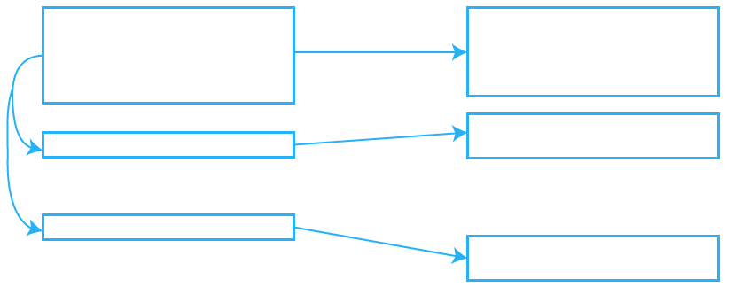

Assez(tic) de perdre du temps,
automatisez ! Grrr !
Présentation par Claire Coloma / JoliCode
Claire COLOMA
- Étudiante en développement mobile à l'ESGI (Paris)
- Développeuse Web et Mobile à JoliCode
Nous allons voir :
- Les surlangages à utiliser
- Les préprocesseurs CSS
- Les surlangages JavaScript
- Les outils d'automatisation
- Assetic
- Grunt
- Gulp
- Bower
Un projet PHP est composé de :
- HTML
- CSS
- JS
- PHP
Les problématiques front
- Performance
- Minifier
- Concaténer
- Minimiser le nombre de requêtes
- Maintenance
- Découplage de fichiers
- Nouvelles fonctionnalités
- Bootstrap
- Le templating
- Angular
- etc.
Pourquoi utiliser des préprocesseurs CSS ?
- Code dynamique
- Réutilisabilité du code
- Simplicité du code
- Meilleure maintenabilité
I. Les surlangages à utiliser
A. Les préprocesseurs CSS
1. Fonctionnalités
Variables
Scss
$primary-color : #cc6699;
Less
@primary-color : #5d83a3;
Stylus
primary-color = #b3d107
// or
$primary-color = #b3d107
Mixins
Scss
@mixin error($borderWidth: 2px) {
border: $borderWidth solid #F00;
color: #F00;
}
.generic-error {
padding: 20px;
margin: 4px;
@include error();
}
.login-error {
left: 12px;
position: absolute;
top: 20px;
@include error(5px);
}Mixins
Less
.error(@borderWidth: 2px) {
border: @borderWidth solid #F00;
color: #F00;
}
.generic-error {
padding: 20px;
margin: 4px;
.error();
}
.login-error {
left: 12px;
position: absolute;
top: 20px;
.error(5px);
}Mixins
Stylus
error(borderWidth= 2px) {
border: borderWidth solid #F00;
color: #F00;
}
.generic-error {
padding: 20px;
margin: 4px;
error();
}
.login-error {
left: 12px;
position: absolute;
top: 20px;
error(5px);
}Héritage
Scss / Stylus
.block {
margin: 10px 5px;
padding: 2px;
}
p {
@extend .block;
border: 1px solid #EEE;
}
ul, ol {
@extend .block;
color: #333;
text-transform: uppercase;
}Rendu CSS
.block, p, ul, ol {
margin: 10px 5px;
padding: 2px;
}
p {
border: 1px solid #EEE;
}
ul, ol {
color: #333;
text-transform: uppercase;
}Héritage

LESS
.block {
margin: 10px 5px;
padding: 2px;
}
p {
.block;
border: 1px solid #EEE;
}
ul, ol {
.block;
color: #333;
text-transform: uppercase;
}Rendu CSS
.block {
margin: 10px 5px;
padding: 2px;
}
p {
margin: 10px 5px;
padding: 2px;
border: 1px solid #EEE;
}
ul,
ol {
margin: 10px 5px;
padding: 2px;
color: #333;
text-transform: uppercase;
}Structure
CSS
nav ul {
margin: 0;
padding: 0;
list-style: none;
}
nav li {
display: inline-block;
}
nav a {
display: block;
padding: 6px 12px;
text-decoration: none;
}Scss / LESS / Stylus
nav {
ul {
margin: 0;
padding: 0;
list-style: none;
}
li { display: inline-block; }
a {
display: block;
padding: 6px 12px;
text-decoration: none;
}
}2. Compilation
Sass
$ sass input.scss output.css
LESS
$ lessc input.less output.css
Stylus
$ stylus < input.styl > output.css
Les options de compilation : watch
- Compiler automatiquement à chaque enregistrement d'une modification
Sass
$ sass --watch input.scss:output.css
Stylus
$ stylus --watch < input.styl > output.css
Les options de compilation : fichiers multiples
- Compiler un répertoire d'un coup
Sass
$ sass app/sass:public/stylesheets
Stylus
$ stylus styl/
Les options de compilation : Minify
- Minifier ses fichiers de style
LESS
$ lessc --clean-css input.less output.css
Sass
$ sass input.scss output.css --style compressed
Stylus
$ stylus < input.styl > output.css --compress
3. Comparaison*
Sass (2006)
371 
3 912 
722 
LESS (Fév. 2010)
606
10 627
2 367
Stylus (Déc. 2010)
225
4 464
621
Issues :
116 Open
1 177 Closed
Issues :
250 Open
1 815 Closed
Issues :
168 Open
1 426 Closed
* Données récupérées le 21/06/14
B. Les préprocesseurs Javascript
CoffeeScript
1. Syntaxe
JavaScript
- " ; " oublié ?
=> erreur - " { " ou " } " oublié ?
=> erreur
CoffeeScript
Besoin d'aucun des deux
Syntaxe
JavaScript
doClick = function(e) {
return console.log(e.index);
};
CoffeeScript
doClick = (e) ->
console.log(e.index)var math;
math = {
square: function(x) {
return Math.sqrt(x);
},
cube: function(x) {
return x * square(x);
}
};
alert("Three cubed is " + (math.cube(3)));math =
square: (x) -> Math.sqrt x
cube: (x) -> x * square x
alert "Three cubed is #{math.cube 3}"if (typeof joli !=="undefined" && joli !==null) {
alert("I knew it!");
}alert "I knew it!" if joli?
Syntaxe
JavaScript
- ===
- !==
- !
- &&
- ||
- true
- false
Hello
CoffeeScript
- is
- isnt
- not
- and
- or
- true, yes, on
- false, no, off
2. Compilation
- Compilation d'un simple fichier CoffeeScript
$ coffee --compile --output js/ chocolate.coffee- Compilation d'un répertoire CoffeeScript
$ coffee --compile --output js/ coffeedir/- Compilation automatique
$ coffee --watch --compile chocolate.coffee- Compilation d'un répertoire en un seul fichier JS
$ coffee --join js/project.js --compile coffee/Récapitulatif
- Code dynamique
- Code découplé
- Nombre de requêtes diminué
- Moins verbeux
- Meilleure maintenabilité

Mais...
Beaucoup de commandesII. Les outils d'automatisation
A. Assetic
1. Fonctionnalités
- Gestion des ressources
- Utilisation de filtres
Gestion des ressources
- Ajouter un dossier complet
- Combiner des fichiers
Les filtres
- Réécrire vos liens relatifs : cssrewrite
- Minifier vos ressources : cssmin
- Compiler vos fichiers: coffee, etc.
2. Exemple d'utilisation
CSS
{% stylesheets
'bundles/event/css/event.css'
'bundles/event/css/buttons.css'
'bundles/event/css/main.css'
filter='cssrewrite'
filter='cssmin'
output='css/generated/layout.css'
%}
{% endstylesheets %}
Un exemple de code généré :
Exemple d'utilisation
Javascript
{% javascripts
'@AcmeFooBundle/Resources/public/coffee/*'
'@SiteBundle/Resources/public/coffee/form.coffee'
output='js/compiled/main.js'
filter='coffee' %}
{% endjavascripts %}
3. Configuration
Le fichier config.yml
# app/config/config.yml
# Assetic Configuration
assetic:
debug: "%kernel.debug%"
use_controller: false
bundles: ['AcmeFooBundle', 'SiteBundle']
filters:
sass: ~
compass: ~
4. Commandes
-
Copie les liens symboliques des assets référencées dans web
$ php app/console asset:install web -symlink -
Génère automatiquement les ressources nécessaires
$ php app/console assetic:dump --watch -
Génère les ressources pour la prod
$ php app/console assetic:dump --env=prod --no-debug
B. Grunt
1. Installation
Grunt
$ npm install -g grunt
$ npm install -g grunt-cli
2. Fonctionnalités
- Minifier vos fichiers
- Compiler automatiquement
- Gérer votre proxy livereload
- Optimiser vos images
- Concaténation de fichiers
- Lancer des tâches automatiquement
3. Les principaux plugins
- sass : permet la compilation de sass/scss en CSS
- watch : permet de lancer des tâches automatiquement
- jshint : permet de détecter les erreurs potentiels de son code JavaScript
- clean : permet de supprimer des fichiers et dossiers
- css-min : permet de concaténer et minifier les fichiers CSS
- uglify : permet de concaténer et minifier les fichiers JS
4. Fichiers nécessaires
- package.json : liste les dépendances
- Gruntfile.js (ou Gruntfile.coffee) : charge les modules et configure les tâches à exécuter
package.json
{
"name": "My badass project",
"description": "Des poneys et des petits coeurs partout partout"
"version": "0.0.1",
"author": "Claire COLOMA",
"devDependencies": {
"grunt": "~0.4.1",
"grunt-contrib-jshint": "~0.6.4",
"grunt-contrib-cssmin": "~0.4.1",
"grunt-contrib-uglify": "~0.2.4",
"grunt-contrib-watch": "~0.5.3",
},
}
$ npm install
Créer un Gruntfile.js : Structure
module.exports = function(grunt) {
// Importation des différents modules grunt
grunt.loadNpmTasks('grunt-plugin');
// Configuration des plugins
grunt.initConfig({});
// Déclaration des différentes tâches
grunt.registerTask('default', ['tache1', 'tache2']);
};
Gruntfile.js : Importation des plugins
module.exports = function(grunt) {
// Importation des différents modules grunt
grunt.loadNpmTasks('grunt-contrib-compress');
grunt.loadNpmTasks('grunt-contrib-connect');
grunt.loadNpmTasks('grunt-contrib-jshint');
grunt.loadNpmTasks('grunt-contrib-watch');
};
module.exports = function(grunt) {
require('load-grunt-tasks')(grunt);
};
Gruntfile.js : Configuration des plugins
module.exports = function(grunt) {
grunt.initConfig({
coffee: {
compile: {
files: {
'js/output1.js': 'coffee/input1.coffee',
'js/output2.js': 'coffee/input2.coffee'
}
}
},
sass: {
dist: {
options : {
style: 'compressed'
},
files: {
'css/output1.css': 'scss/input1.scss',
'css/output2.css': 'scss/input2.scss'
}
}
},
watch: {
css: {
files: ['scss/*.scss'],
tasks: ['sass'],
}
script: {
files: ['coffee/*.coffee'],
tasks: ['coffee']
}
}
});
};Gruntfile.js : Déclaration des tâches
module.exports = function(grunt) {
// Déclaration des tâches
grunt.registerTask('compress', ['sass', 'coffee']);
grunt.registerTask('default', ['compress', 'watch']);
grunt.registerTask( 'serve', [ 'connect', 'watch'] );
};On tape ensuite la commande :
$ grunt [task-name]
5. Pourquoi Grunt est meilleur qu'Assetic ?
- Découpler Application / Gestion des ressources
- Plus de fonctionnalités
- Lancement de tâches séparées
- Plus simple
C. Gulp
1. Différences Grunt / Gulp ?
- Approche Code et pas Config
- Asynchrone
- Plus rigoureux avec les plugins
Différences Grunt/Gulp ?
Grunt
module.exports = function(grunt) {
grunt.initConfig({
sass: {
dist: {
files: [{
expand: true,
cwd: 'css/theme/source/',
src: ['*.scss'],
dest: 'css/theme/',
ext: '.css'
}]
}
},
watch: {
css: {
files: ['scss/*.scss'],
tasks: ['sass'],
}
}
});
// Importation des différents modules grunt
require('load-grunt-tasks')(grunt);
// Déclaration des tâches
grunt.registerTask('default', ['sass','watch']);
};
Gulp
var gulp = require ('gulp');
// Importation des plugins
var sass = require('gulp-sass');
var cssmin = require('gulp-cssmin');
// Traitement des tâches
gulp.task('sass', function () {
gulp.src('scss/*.scss')
.pipe(plumber())
.pipe(sass())
.pipe(gulp.dest('css/'))
.pipe(rename({suffix:'.min'}))
.pipe(cssmin())
.pipe(gulp.dest('css/'))
});
gulp.task('watch', function() {
gulp.watch('scss/*.scss', ['sass']);
})
gulp.task('default', ['sass', 'watch']);Gulp est asynchrone
Gulp utilise des streams
Sans stream :
Avec stream :
2. Installation
- Gulp sur la machine :
$ npm install -g gulp - Initialisation dans le projet :
$ npm install gulp --save-dev
3. Fichiers nécessaires
- package.json : liste les dépendances
- gulpfile.js : charge les modules et traite les tâches à effectuer
package.json
{
"devDependencies": {
"gulp": "~3.6.2",
"gulp-connect": "~2.0.5",
"gulp-jshint": "~1.6.1",
"gulp-sass": "~0.7.1",
"gulp-plumber": "~0.6.2",
},
}
$ npm install
Créer un gulpfile.js : Structure
// Importation de l'API
var gulp = require ('gulp');
// Importation des plugins
var task = require('gulp-task');
// Traitement des tâches
gulp.task('default', ['task1', 'task2']);
On tape ensuite la commande :
$ gulp [task-name]
4. Les tasks
- plumber : permet de réparer les pipes foireux
- notify : permet d'être notifié sur son terminal
- rename : permet de renommer un fichier
D. Bower
Bower ça sert à quoi ?
- Un gestionnaire de dépendances front-end
- Underscore.js
- AngularJS
- Modernizr
- jQuery
- Backbone.js
- etc...
- = composer.phar
Installation d'un composant
-
$ bower install package-name - D'une version précise
$ bower install package-name#version - D'un dépôt Git
$ bower install https://github.com/user-name/package-name
Fichiers nécessaires
- .bowerrc : indique le dossier où seront stockés les composants
- bower.json : liste les dépendances
.bowerrc
Répertoire des composants
{
"directory": "vendor/bower_components"
}
bower.json
Liste des versions des composants{
"name": "My badass project",
"description": "Des poneys et des petits coeurs partout partout"
"version": "0.0.1",
"author": "Claire COLOMA",
},
"dependencies": {
"angular": "~1.2.13",
"modernizr": "~2.6.2",
"moment": "~2.4.0",
"underscore": "~1.4.4",
},
} Utilisation d'un paquet
Ajouter le composant manuellement dans son code :
Mettre à jour un paquet
$ bower update package-name
Conclusion
- Utilisez les outils d'industrialisation nécessaires à vos projets
- Regroupez vos tâches
- Grunt va introduire les streams
- Yeoman
- Automatisez :)
Merci !
Claire COLOMA / @_ClaireColoma http://jolicode.github.io/phptourconf-tools